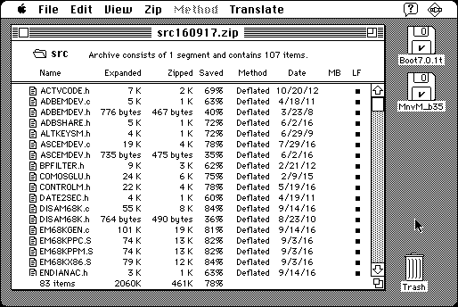

Download
zipit-14.zip (668K) ZipIt 1.4 repackaged into a zipped hfs disk image and checksum file. The disk image can be mounted with Mini vMac.
zipit-14.sea.bin (848K) ZipIt 1.4 in the original format.
copyright: Thomas Brown
mod date: Sep 25, 1999
license: shareware
last known url
(gone)
“Program to zip and unzip files”. The menu command “About” crashes, but otherwise seems ok. Requires System 7.

If you find these downloads useful, please consider helping the Gryphel Project, which hosts them.
Here are the md5 checksums for the downloads, signed with Gryphel Key 5:
--------- GRY SIGNED TEXT --------- afdea49948c3b6a9bef8e59efb60e069 zipit-14.zip f33131ce7b1455216a3b04c3c03ea440 zipit-14.sea.bin ------- BEGIN GRY SIGNATURE ------- Gry/4Xa8CFcUzxdN/HnQ6KaQ7Pl9SL7umgp+Z5WvCJTAu7rWZTZ2QQ+2OWIdNOMo GGvngDt3QUstNOvd3/oJ1Bn5/P1z+SWYLavBiksZJoRMq7O2a4JZdrwWQREEhaMG kT2FT0w28JUqszhHOyQNFFaL0N9zw+MRJK6Bs00zvmZzh4EHVDw64cJgbFip8KGX -------- END GRY SIGNATURE --------